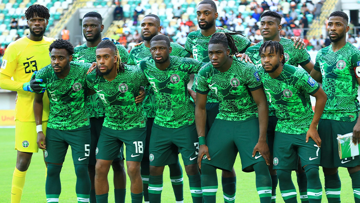

Transfer News | 9 October 2026
Taiwo Awoniyi leaves Nottingham Forest for Coventry City
The Super Eagles striker has joined Coventry City. Here is what the move means.
A Nigerian football, explained by a fan.
Featured StoryAn opinion piece by a fan who has watched too many second halves go wrong.

Ask any Nigerian fan what the Super Eagles need, and the answer is usually the same: a striker. Goals win games, so we look at the front line, argue about who should start, and blame whoever missed the last chance. I think we are looking in the wrong place. The Eagles have rarely lacked attacking talent. Our problems tend to begin about thirty yards further back, in the middle of the pitch.
Read MoreTransfer News | 9 October 2026
The Super Eagles striker has joined Coventry City. Here is what the move means.
Tables | 9 October 2026
Nigeria are second after two games. See the table, the results and the next fixtures.
AFCON 2027 qualifiers, after Matchday 2 (9 October 2026)
| Pos | Team | P | GD | Pts |
|---|---|---|---|---|
| 1 | Guinea-Bissau | 2 | +5 | 6 |
| 2 | Nigeria | 2 | -2 | 3 |
| 3 | Madagascar | 2 | -1 | 1 |
| 4 | Tanzania | 2 | -2 | 1 |
Next: Nigeria v Tanzania, 13 November 2026, Uyo.
ID: SP-SE-001 | Striker | Coventry City
A strong, hard-running striker who likes to battle defenders and hold the ball up.
Pitchside covers the Super Eagles and Nigerian football with clear, sourced reporting and honest opinion. Read more about us.